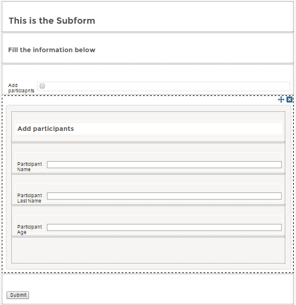
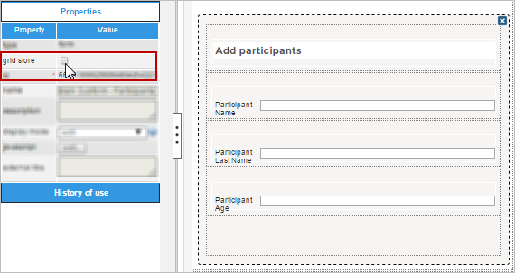
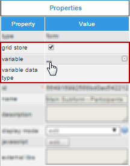
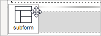
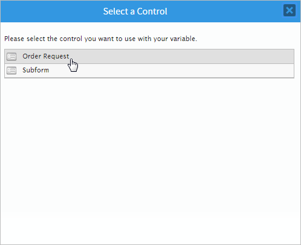
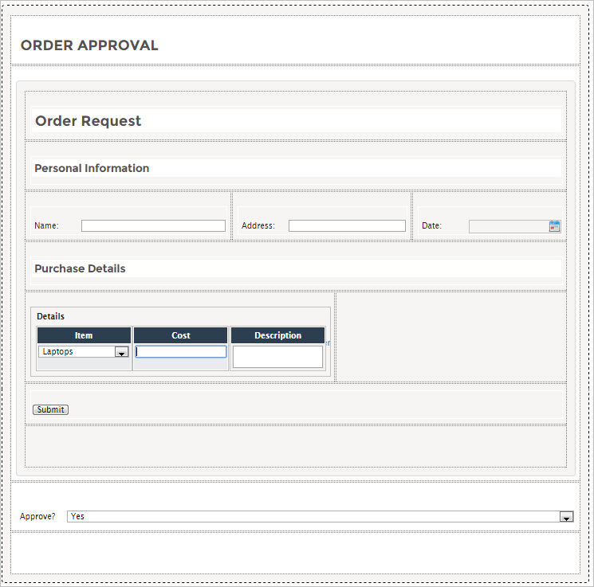
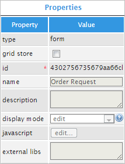
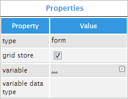
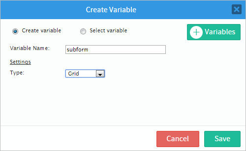
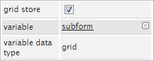

Overview
A Subform control inserts a Dynaform that was already created in the project into a master Dynaform, adding it as another row of the design and displaying its entire design when running a case. To add this control to the Dynaform, drag the following icon from the left panel and drop it into the designer.
The Select Control message box will open with a list of all existing Dynaforms in the project. Select the Dynaform that will be added to the design from the list.

The sub-Dynaform will be included in the design with all of its rows displayed.

The subform control does not allow the form inserted into the design to be edited. The original Dynaform must be changed to make changes in all the subforms that use the Dynaform.
When the Dynaform is rendered (in the preview or when running cases), subforms are displayed like normal form content.

When working with subforms, take into account the following points:
- The same form can only be used once in the same Dynaform (to avoid duplicating the use of variables and IDs).
- The subform can’t be edited in the master Dynaform. It is displayed as read only. To modify the subform, open it in the Dynaform designer. The changes made in the form will be reflected automatically in all the subform fields in the master Dynaform.
- Only one level of nesting is allowed. A subform can’t contain subforms.
- A form can contain multiple subforms (which must be different).
- To avoid the duplication of variables and ID’s with subforms, a validation must be executed to alert the user of any existing duplicated variables/IDs. The designer must decide whether the design can continue with the duplicated variables/ids.
Warning: Take care when upgrading ProcessMaker. Because of the changes made to the functionality of the subforms, it is no longer possible to customize the subforms when they are added to the master Dynaform (their properties will be in view mode, so no changes can be made). If you had customized the subforms in previous versions of ProcessMaker (like adding customized JavaScript, modifying the controls, etc.) these changes will be lost.
Note: In version 3.0.1.4, it is possible to delete rows and controls from the subform, but take into account that if the original form is modified after the rows and controls were deleted from the subform in the master Dynaform, the subform will be rendered in the master Dyanform only applying the changes made to the orignal form, so the changes to the subform will not have any effect.
Properties
Click on any light gray space in the subform to view and work with its properties.
| Property | Description |
|---|---|
| Type | form (readonly) |
| Grid Store | This property allows a grid variable to be related to a subform field, so many instances of the same subform
can be added to the master Dynaform.
Available version: From version 3.0.1.5 to 3.0.1.7. Note: This property is no longer available from version 3.0.1.8 on. |
| ID | The same ID (unique HTML identifier) as the parent form (readonly). |
| Name | [Readonly] The same name as the parent form. |
| Description | [Readonly] The same description set when the parent form was created. This property describes what the Dynaform is about. |
| Mode | [Readonly] Display mode of the parent form:
|
| JavaScript | [Readonly] In subforms, the JavaScript code is concatenated to the parent form thus this property is readonly. |
| External Libs | [readonly] Area where the external libraries of the parent form are shown. |
Note: Take into account that if the subform has JavaScript code in its configuration, it will be executed every time the Dynaform is loaded.
Subform Properties
Subforms are basically Dynaforms embedded inside another form. The properties of a subform are inherited from the original Dynaform and cannot be modified. However, subform controls have one additional property explained in the next section.
Grid Store
Available in: ProcessMaker 3.0.1.5 to 3.0.1.7. This property is no longer available from version 3.0.1.8 on.
This property allows a subform control to be related to a grid variable, so many instances of the subform can be added to the form - one row after another - as rows of a grid.
Note: At the moment, this property only relates a grid variable to a subform control. This option was added for experimental purposes in version 3.0.1.5, but it was removed as of version 3.0.1.8 on.
To relate the grid variable to the subform control, select the subform in the designer.

Check the grid store property and the variable and variable data type properties will be displayed below.

Select or create a new grid variable to associate to the subform.

Subform Control Example
For this example add a Subform control by dragging and dropping it from the left hand panel.

Immediately after the control is added a window will appear where all the Dynaforms created can be found. Select one of the Dynaforms to be a subform.

Once a subform is selected it will be added to the Dynaform as seen in the image below. Adding a subform can sometimes be easier than exporting and importing a Dynaform. The form will not rendered if there are controls that have the same ID, so take this into consideration when using subforms.

Click on any gray space in the subform to display its properties in the left hand panel. The properties of this control are mostly disabled, as seen in the image below.

Once the properties are displayed, the only property that can be changed is the grid store property. When this property is checked, a variable can be added by clicking on the underlined ellipsis .... A new window will be shown.

Create a grid type variable named "subform", as seen in the image below.

The result of this action is the following:
